ホームインターメソッド 3日間ライブ Day1 台本（2026-11-26版）
- 話す人：ピグマリオン恵美子（1人で話す）
- 枚数：54枚 時間の目安：約72分
- スライド：各枚の見出しの下に、そのスライドの画像を入れています。パワーポイントには、この台本と同じ文が発表者ノートに入っています。
- 【 】は進行の補足で、読みません。「確認待ち」は、先に確かめてから直す所です（スライドにもピンクの札で出しています）。
全体の流れ
| 段 | 枚 | 目安 |
|---|---|---|
| 1. オープニング | 1〜5 | 約4分 |
| 2. 講師紹介 | 6〜9 | 約5分 |
| 3. ストーリー | 10〜14 | 約9.5分 |
| 4. なぜ今必要か | 15〜18 | 約6分 |
| 5. 5つの勘違い | 19〜25 | 約9分 |
| 6. 前提の共有と問い | 26〜28 | 約3分 |
| 7. 鍵1 考え方 | 29〜33 | 約8分 |
| 8. 鍵2 やり方 | 34〜39 | 約8分 |
| 9. 鍵3の予告 | 40〜40 | 約1分 |
| 10. お客様の変化と締め | 41〜43 | 約4.5分 |
| 11. ミッションと個別説明会 | 44〜50 | 約10.5分 |
| 12. 課題と予告 | 51〜54 | 約3.5分 |
確認待ち（9件）
- 6枚目：スクールの年数（スライドは16年、11/14の本番では「17年前」、元の写真の文字は14年）と、「1万組」「1万人」のどちらにそろえるか
- 14枚目：スクールの年数（16年か17年か）
- 16枚目：パスポート保有率17%の出典と年
- 26枚目：「家庭での関わり方で育ち方が変わる」文献があれば、出典つきでここに入れる
- 30枚目：事例のご本人に、Day1で紹介してよいか確かめる
- 41枚目：ご本人が話している動画があれば、その一場面とご本人の丸いアイコンに差しかえる（載せてよいかの了承も）
- 47枚目：受講生の人数（11/14の本番では「今500人ぐらいかな」）と、遊びの動画の本数（同じく「200本以上」）
- 48枚目：診断の対象年齢と、お申し込みの数の制限（お子さん1人）が今も同じか
- 50枚目：申し込みページのURLが今の38クールのものか
1. オープニング
1枚目 世界に通用する子どもの育て方（約0.5分）
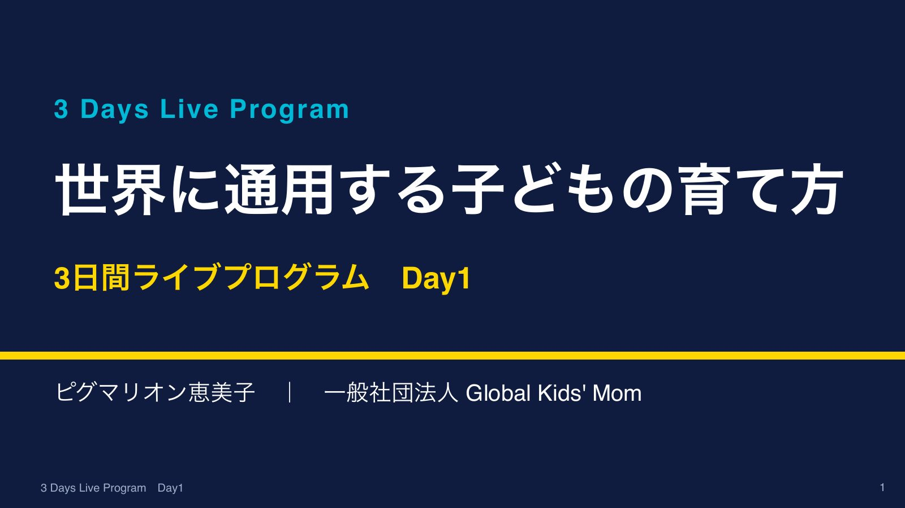
画面の文字：3 Days Live Program／世界に通用する子どもの育て方／3日間ライブプログラム Day1／ピグマリオン恵美子 ｜ 一般社団法人 Global Kids' Mom
皆さん、こんばんは。ピグマリオン恵美子です。
今日から3日間、「世界に通用する子どもの育て方」というテーマで、ライブをさせていただきます。
オンタイムでご参加の皆さん、チャットに、お子さんのお名前とご年齢、それから、どちらの地域からご参加か、ぜひ書いてくださいね。
【書いてくれた方を2〜3人読み上げる】
ありがとうございます。それでは、スライドをシェアしながら進めていきます。
2枚目 インターナショナルスクール以下の料金で、インターナショナルスクール以上の教育を、家庭で実現する方法（約1分）
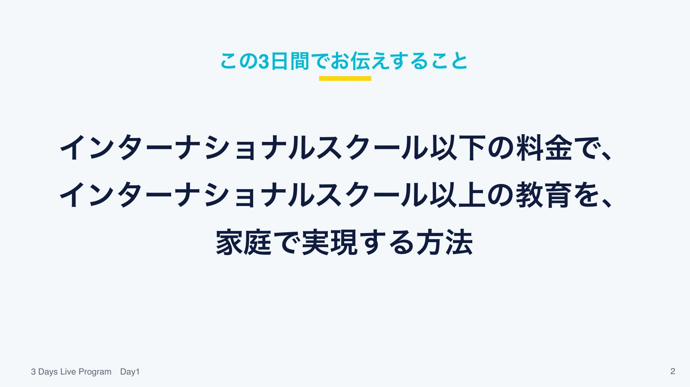
画面の文字：この3日間でお伝えすること／インターナショナルスクール以下の料金で、インターナショナルスクール以上の教育を、家庭で実現する方法
この3日間でお伝えするのは、
インターナショナルスクール以下の料金で、インターナショナルスクール以上の教育を、家庭で実現する方法です。
海外に移住しなくていい。毎月30万円の学費を払わなくていい。
お家でできます。
今日は、そのための土台になるお話をしていきます。
3枚目 3日間を、一緒に成長する時間にするために（約1.5分）
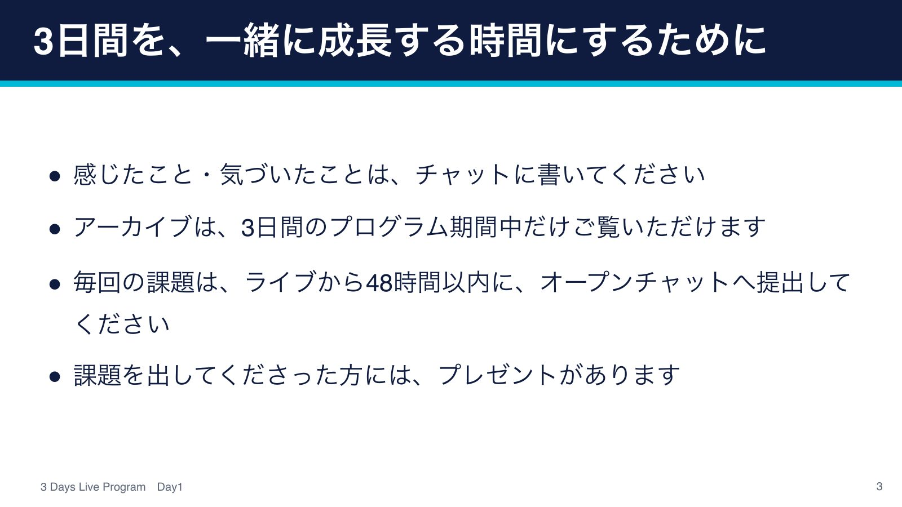
画面の文字：3日間を、一緒に成長する時間にするために／感じたこと・気づいたことは、チャットに書いてください アーカイブは、3日間のプログラム期間中だけご覧いただけます 毎回の課題は、ライブから48時間以内に、オープンチャットへ提出してください 課題を出してくださった方には、プレゼントがあります
せっかく貴重な時間を使って来てくださっているので、この3日間で、ちゃんと知識や気づきを自分のものにしていただきたいんですね。
ただ見ているだけ、聞いているだけだと、脳に定着しないんです。言葉にすることで、はじめて自分のものになります。
なので、ルールが3つあります。
1つ目。感じたことや気づいたことは、どんどんチャットに書いてください。あなたの書いた一言が、ほかのママさんの気づきにもなります。
2つ目。オンタイムが一番ですが、難しい方はアーカイブがあります。ただ、見られるのは3日間のプログラム期間中だけです。
3つ目。毎回、課題を出します。ライブから48時間以内に、オープンチャットに提出してください。
課題を出してくださった方には、プレゼントをご用意しています。楽しみにしていてくださいね。
4枚目 世界最高峰の教育とは、何でしょうか？（約0.5分）
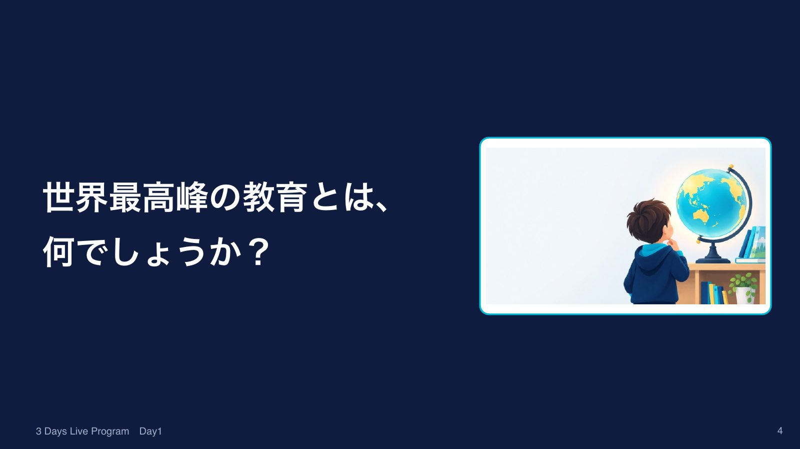
画面の文字：世界最高峰の教育とは、何でしょうか？
では、最初に1つ、皆さんに質問です。
世界最高峰の教育とは、何でしょうか？
【5秒ほど間を取る】
高い学費の学校でしょうか。海外のインターナショナルスクールでしょうか。それとも、有名な塾でしょうか。
チャットに、思いついたことを書いてみてください。
【書いてくれた答えを2〜3個読み上げる】
ありがとうございます。この答えは、今日のライブの最後に、もう一度一緒に考えます。
5枚目 お家で、最高の教育環境を育てる 3つの鍵（約0.5分）

画面の文字：お家で、最高の教育環境を育てる 3つの鍵／鍵1／？／鍵2／？／鍵3／？／今日は、このうち2つを開けます
今日は、この3つの鍵のお話をします。
お家で、最高の教育環境を育てるための、3つの鍵です。
今はまだ、全部「？」になっていますね。
今日のライブでは、このうち2つを開けていきます。
話が進むたびに、1つずつ開いていくので、ぜひ「何が入るんだろう」と考えながら聞いてみてください。
2. 講師紹介
6枚目 ピグマリオン恵美子（約1.5分）

画面の文字：ピグマリオン恵美子／一般社団法人 Global Kids' Mom 代表理事／東京・杉並で、英語スクールを16年運営 入会待ちが続く人気教室に のべ1万人以上の親子と向き合ってきた 3児の母
改めまして、ピグマリオン恵美子です。
一般社団法人グローバルキッズマムの代表理事をしています。世界で活躍できる子どもを育てる、お父さんお母さんの団体です。
私自身も、3人の子どもの母親です。
長女が生まれた頃から、東京の杉並で、英語スクールを運営してきました。吉祥寺のすぐ近くです。
グローバル教育を取り入れたカリキュラムで、ありがたいことに、長年「入会待ち」が続く教室になりました。
これまで、のべ1万人以上の親子と向き合ってきました。【「1万組」か「1万人」か、確かめてから読む】
（確認待ち：スクールの年数（スライドは16年、11/14の本番では「17年前」、元の写真の文字は14年）と、「1万組」「1万人」のどちらにそろえるか）
7枚目 論より証拠：数値に出た変化（約1.5分）

画面の文字：論より証拠：数値に出た変化／スクールの子どもたちの知能検査の結果（IQ214・IQ204）
そのスクールで、ずば抜けてできる子たちが出てきたんですね。
走らせたらぶっちぎりで速い。絵を描かせたら、学年が違うような絵を描く。みんなで遊ぶときには、リーダーになって新しい遊びを考える。
保育園や幼稚園で「あの子たち、すごいね」と噂になって、お母さんたちから「数値でも見てみたい」という声が出ました。
それで知能検査を受けてきてくださったら、IQ214、IQ204、こういう数値が出てきたんです。
私は知能指数を上げるスクールをやっていたわけではありません。普通の英語スクールです。それでも、こういう数値が出てきた。これが、私たちのカリキュラムが注目されたきっかけです。
8枚目 IQだけではありません（約1分）
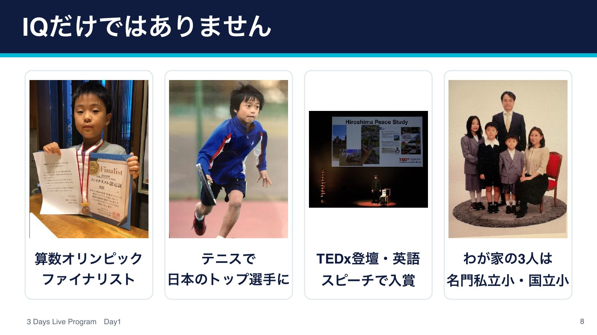
画面の文字：IQだけではありません／算数オリンピックファイナリスト／テニスで日本のトップ選手に／TEDx登壇・英語スピーチで入賞／わが家の3人は名門私立小・国立小
そして、伸びたのはIQだけではないんですね。
算数オリンピックで入賞した子、テニスで日本のトップ選手になった子、舞台のオーディションに選ばれた子、有名な音楽コンクールで金賞をとった子。
大人にまじってTEDxで英語のスピーチをした子や、英語スピーチコンテストで入賞した子もいます。
わが家の3人も、名門の私立小学校と国立小学校に合格して、今は国際バカロレアの学校に通っている子もいます。
勉強をさせ込んだわけではありません。いろいろな力が、一緒に伸びていったんです。
9枚目 メソッドが書籍に。TEDxや、こども家庭庁の意見交換会でも（約1分）
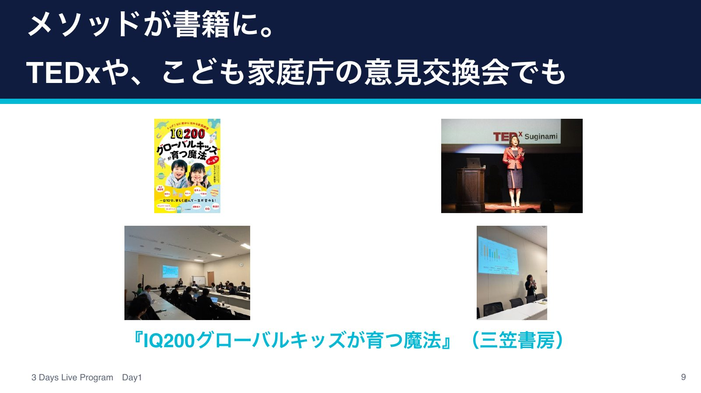
画面の文字：メソッドが書籍に。TEDxや、こども家庭庁の意見交換会でも／『IQ200グローバルキッズが育つ魔法』（三笠書房）
このメソッドが話題になって、三笠書房さんから『IQ200グローバルキッズが育つ魔法』という本として出版していただきました。
TEDxで英語のスピーチもさせていただきましたし、こども家庭庁さんの意見交換会でもお話をさせていただいています。
現場で、実際に子どもたちが伸びてきた事実をもとにしたメソッドです。
3. ストーリー
10枚目 実は私も、最初の子育ては不安だらけでした（約2分）
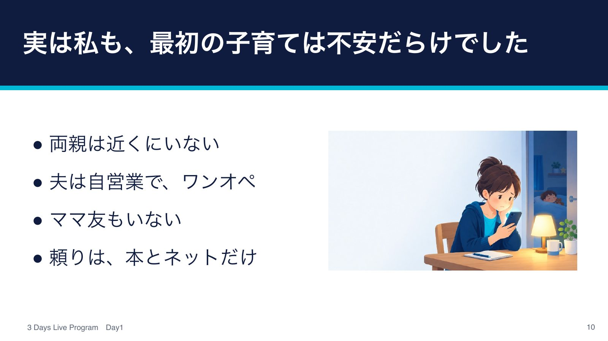
画面の文字：実は私も、最初の子育ては不安だらけでした／両親は近くにいない 夫は自営業で、ワンオペ ママ友もいない 頼りは、本とネットだけ
こうお話しすると、順調そうに聞こえるかもしれません。
でも実は私も、最初の子育ては不安だらけでした。
両親は近くにいなくて、夫は自営業でワンオペ。保育園になんとか入れても、ママ友もいない。誰にも相談できなかったんです。
頼りは、本とネットだけでした。
保健センターからもらったノートには、「何か月で、これができる」と書いてある。
他の子はできている。うちの子は、まだ。
比べれば比べるほど、心がひりひりしました。
皆さんも、「これでいいのかな」「この子、大丈夫かな」って、迷うこと、ありませんか？
11枚目 公園で気づいたこと（約2.5分）

画面の文字：公園で気づいたこと／他の子は、どんどん登る うちの子は、じっと見ている 怖いのではない。考えている
ある日、公園に行ったときのことです。
他の子たちは、わーっと滑り台に走っていって、どんどん登っていくんですね。
でも、うちの長女は行かないんです。座って、じっと見ている。
私は焦りました。「この子、怖がりなのかな」「人見知りなのかな」。本に書いてあることとも違うし、どう声をかけたらいいのかも分からない。
でも、本の知識や、周りから言われることをいったん置いて、この子だけを見てみたんです。
そうしたら、怖がっているのでも、人見知りでもなかった。
自分がやるタイミングを、自分で考えていたんです。
慎重だけれど、自分ができると思ったときには、ちゃんと自分から登っていく。その子なりの小さな一歩を、ちゃんと踏み出していたんですね。
12枚目 横並びをやめて、うちの子だけを見た。すると、伸びた。（約1.5分）

画面の文字：横並びをやめて、うちの子だけを見た。すると、伸びた。／伸びる子の家庭には、共通点があった
それから私は、横並びをやめました。
何か月で何ができる、という平均に合わせるのをやめて、うちの子だけを見ることにしたんです。
そうしたら、ぐんぐん伸びていきました。私の心配が伝わらなくなったのかもしれませんね。
スクールの子どもたちにも、同じように、その子だけを見ることを始めました。
そして、伸びていく子どもたちのご家庭を見ていくうちに、気づいたんです。
伸びる子の家庭には、共通点がある、ということに。
その共通点が何なのかを、今日は少しずつお話ししていきます。
13枚目 最高の教育環境を、子どもたちに与えたい（約2分）
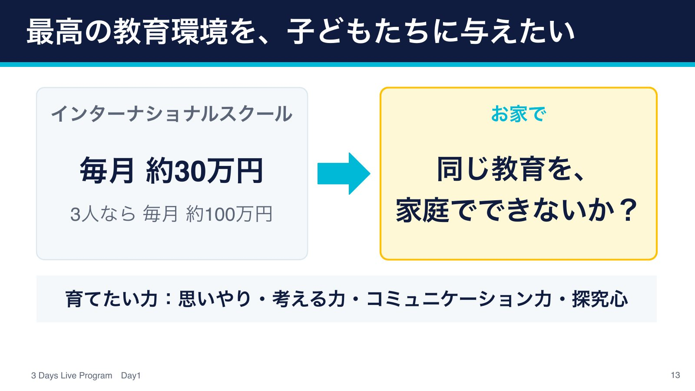
画面の文字：最高の教育環境を、子どもたちに与えたい／インターナショナルスクール／毎月 約30万円 3人なら 毎月 約100万円／お家で／同じ教育を、家庭でできないか？／育てたい力：思いやり・考える力・コミュニケーション力・探究心
3人の子どもを育てながら、私はずっと、「最高の教育環境を、子どもたちに与えたい」と思っていました。
インターナショナルスクールも見に行きましたし、海外移住も考えました。
でも、インターナショナルスクールは、毎月30万円ほどかかります。3人いたら、毎月100万円近くです。正直、現実的ではありませんでした。
そこで思ったんです。同じ教育を、家庭でできないか、と。
世界のトップの方たちの間では、家庭で学ぶ「ホームスクール」が広がっています。
そういう学校や家庭で育っているのは、相手を思いやる力、自分で考える力、コミュニケーション力、探究心。
この力なら、家庭でも育てられるんですね。
たとえば、わが家では、子どもの誕生日パーティーを、子ども自身に企画してもらっていました。4歳か5歳の頃から、招待する人のリストを作って、招待状を作って、飾りつけや料理まで自分で考える。
わざわざ社交パーティーの会場を借りなくても、お家で同じ力が育つんです。
14枚目 16年の現場と、各分野の方から学んだこと（約1.5分）

画面の文字：16年の現場と、各分野の方から学んだこと／その積み重ねが、今日お話しする内容です
このメソッドを世界に届けるために、各分野の方にも相談に行き、たくさん学ばせていただきました。
台湾での知育イベントや、インドの学校での講演など、海外でもお話しする機会をいただいています。
16年間の現場で、たくさんの親子と向き合ってきたこと。そして、各分野の方から学んできたこと。
その積み重ねが、今日お話しする内容です。
（確認待ち：スクールの年数（16年か17年か））
4. なぜ今必要か
15枚目 20年後、子どもたちが生きる社会は？（約2分）

画面の文字：20年後、子どもたちが生きる社会は？／変わるのは時代ではなく、求められる力です／AIが「正解を覚える仕事」をする 英語で、選べる道が変わる 世界とのつながり方も変わる
ここで少しだけ、未来のお話をさせてください。
皆さんのお子さんが社会に出るのは、15年後、20年後ですよね。
今6歳のお子さんなら、20年後は26歳です。
そのときの社会、今と同じだと思いますか？
【間】
AIは、もう人間の知能を超え始めています。お医者さんや弁護士さん、コンサルタントのような仕事でさえ、AIに置きかわり始めていると言われています。
正解を覚える、暗記する、という仕事は、ほとんど残らないかもしれません。
英語ができるかどうかで、選べる仕事や暮らしも変わっていきます。
でも、皆さんに覚えておいてほしいのは、この一言です。
変わるのは時代ではなく、求められる力です。
16枚目 世界の人とコミュニケーションがとれ、自分で考え、決断し、行動する力（約1.5分）

画面の文字：世界の人とコミュニケーションがとれ、自分で考え、決断し、行動する力／これがある子は、どんな時代でも生きていける／日本のパスポート保有率は約17%。83%の人は、まだ世界を見ていない
では、AIの時代になっても変わらないものは何か。
それが、世界の人とコミュニケーションがとれて、自分で考え、決断し、自分で行動する力です。
この力がある子は、どんな時代でも生きていけます。
「英語をやったらいいの？」「プログラミング？」と、本当に毎日のように聞かれます。でも、大事なのは、この力なんですね。
ところが、日本のパスポートの保有率は、約17%だそうです。83%の人は、まだ世界を見ていないんですね。
実はこの力は、家庭で育てられるんです。
（確認待ち：パスポート保有率17%の出典と年）
17枚目 8歳までが、ゴールデンタイム（約1.5分）
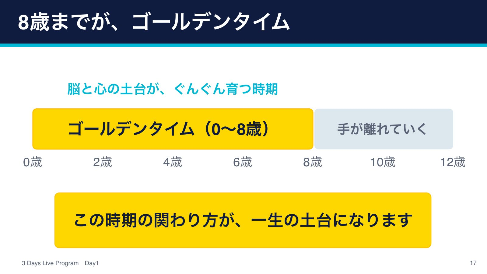
画面の文字：8歳までが、ゴールデンタイム／ゴールデンタイム（0〜8歳）／手が離れていく／0歳／2歳／4歳／6歳／8歳／10歳／12歳／脳と心の土台が、ぐんぐん育つ時期／この時期の関わり方が、一生の土台になります
そして、もう1つ大事なことがあります。
8歳までが、ゴールデンタイムです。
脳と心の土台がぐんぐん育つのが、この時期なんですね。
8歳を過ぎると、子どもはだんだん手を離れていきます。だからこそ、8歳までのお家での関わり方が、その子の一生の土台になります。
今日来てくださっている皆さんは、まさに今、そのゴールデンタイムの真ん中にいるんです。
18枚目 「普通でいい」「なんとかなる」その感覚は、危険です（約1分）

画面の文字：「普通でいい」「なんとかなる」その感覚は、危険です／では、何が遠回りなのか
はっきり言いますね。
「普通でいい」「なんとかなる」。この感覚は、危険です。
今まではなんとかなってきたかもしれません。でも、これからの時代は、格差がどんどん開いていきます。収入、情報、教育。普通、という場所がなくなっていくんですね。
でも、安心してください。今日こうして学びに来てくださっている皆さんは、もう動き始めています。
では、子どものために、と頑張っているのに、実は遠回りになっていることは何なのか。次に見ていきます。
5. 5つの勘違い
19枚目 伸び悩むご家庭に共通する、5つの勘違い（約1分）

画面の文字：伸び悩むご家庭に共通する、5つの勘違い／たくさんのママから相談を受けてきて、分かったこと／？／勘違い①／？／勘違い②／？／勘違い③／？／勘違い④／？／勘違い⑤／良かれと思ってやっていることが、実は遠回りに
これまで、本当にたくさんのママから相談を受けてきました。
その中で分かったのが、伸び悩むご家庭には、共通する勘違いがある、ということです。
良かれと思ってやっていることが、実は遠回りになっている。そんな勘違いが、5つあります。
1つずつ見ていきますね。ご自分に当てはまるものがあるか、ぜひ数えながら聞いてください。
20枚目 お金をかければ、頭が良くなる（約1.3分）
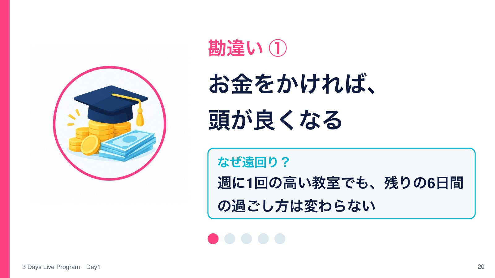
画面の文字：勘違い ①／お金をかければ、頭が良くなる／なぜ遠回り？／週に1回の高い教室でも、残りの6日間の過ごし方は変わらない
1つ目。お金をかければかけるほど、頭が良くなる。
高い幼児教室、高い家庭教師。一時期、すごく流行りましたよね。
でも、週に1回、どんなに高い教室に通っても、子どもが過ごすのは、残りの6日間のほうが長いんです。
その6日間の過ごし方が変わらなければ、結果は大きく変わりません。
21枚目 教材を与えればいい（約1.2分）
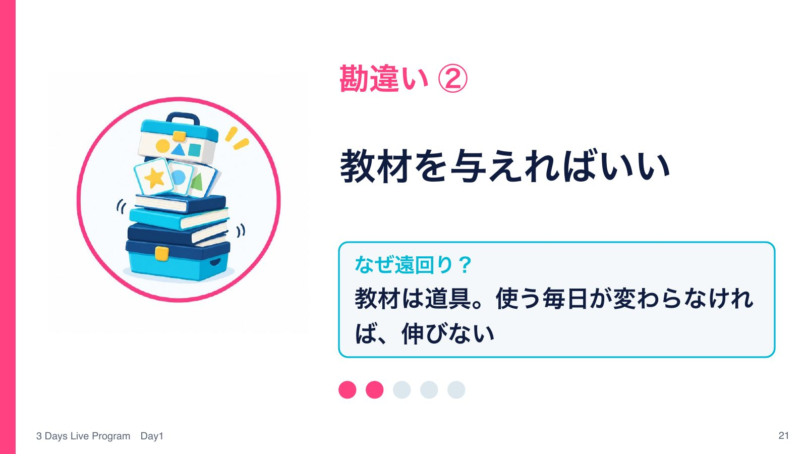
画面の文字：勘違い ②／教材を与えればいい／なぜ遠回り？／教材は道具。使う毎日が変わらなければ、伸びない
2つ目。教材を与えればいい。
評判のいい教材を買って、子どもに渡す。それで安心してしまうこと、ありませんか？
教材は、あくまで道具です。
その道具をどう使うか、毎日の関わりが変わらなければ、子どもは伸びていかないんですね。
22枚目 塾や習い事に預ければ、何とかなる（約1.2分）

画面の文字：勘違い ③／塾や習い事に預ければ、何とかなる／なぜ遠回り？／預けるのは、1週間のほんの一部
3つ目。塾や習い事に預ければ、何とかなる。
1つ目から3つ目は、実は同じなんです。お金をかけて外に出せば、なんとかなる、と思っている。
でも、預けている時間は、1週間のうちのほんの一部です。
子どもの育ちの土台になっているのは、残りの、お家での時間なんですね。
23枚目 ママが先生になって、子どもを引っ張っていく（約1.5分）

画面の文字：勘違い ④／ママが先生になって、子どもを引っ張っていく／なぜ遠回り？／子どもに必要なのは、安心できるママ
4つ目。ママが先生になって、子どもを引っ張っていく。
私たちグローバルキッズマムでは、ママは先生をやめてください、とお伝えしています。
先生と子どもの関係と、ママと子どもの関係は、違うんですね。
子どもは、お家に先生なんていらないんです。ママにいてほしいんです。
お家にも先生がいたら、子どもが安心できる場所がなくなってしまいます。
だから、ママは何でもかんでも教えなくていい。子どもと一緒に遊んでください。このお話は、Day2でじっくりしますね。
24枚目 SNSで、教育情報を集め続ける（約1.3分）
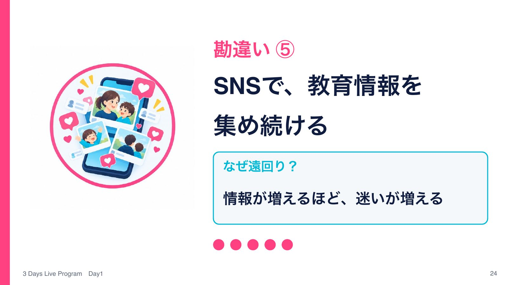
画面の文字：勘違い ⑤／SNSで、教育情報を集め続ける／なぜ遠回り？／情報が増えるほど、迷いが増える
5つ目。SNSやインスタで、子どもの教育情報を、ずっと調べたり集めたりしている。
これも、やりますよね。
でも、情報が増えれば増えるほど、迷いも増えていきます。
今日は英語、次は算数、次は知育。調べ続けて、気づいたら、うちの子のことを見る時間が減っている。これが、5つ目の勘違いです。
さあ、5つのうち、いくつ当てはまりましたか？ チャットに数字で書いてみてください。
25枚目 ジムに通っても、家がジャンクフードだらけなら、健康にはならない（約1.5分）
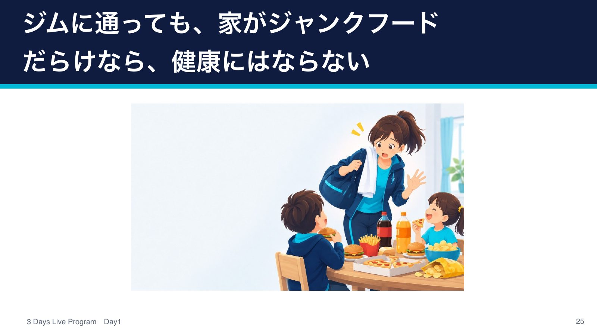
画面の文字：ジムに通っても、家がジャンクフードだらけなら、健康にはならない
たとえば、私たち大人が、健康になりたいと思ったとします。
高いジムに週に1回通う。高いサプリを飲む。高いエステに通う。
でも、家に帰ったら、テーブルはジャンクフードだらけ。
これで健康になれると思いますか？ なれないですよね。
本当に大事なのは、家で、素材のいいものをシンプルに料理して食べること。毎日の生活のほうなんです。
大人の健康なら、みんなそれを知っているのに、なぜか子どもの教育になると、外に預けることばかり考えてしまうんですね。
6. 前提の共有と問い
26枚目 外に任せても、変わらない。だから、家庭。（約1分）
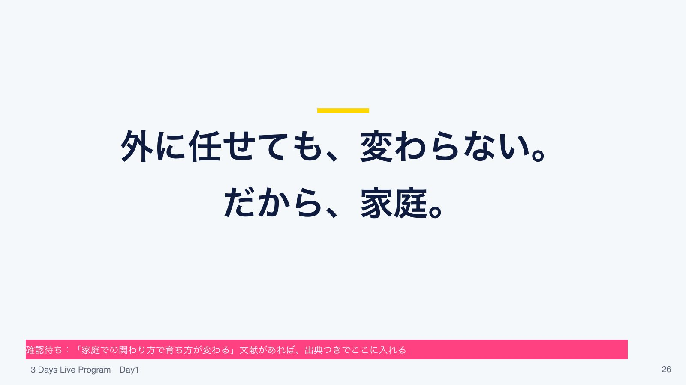
画面の文字：外に任せても、変わらない。だから、家庭。
ここまでのお話を、一言でまとめますね。
外に任せても、変わらない。だから、家庭なんです。
【文献があれば、ここで出典とあわせて紹介する】
お家での毎日の関わり方で、子どもの育ち方は変わります。
（確認待ち：「家庭での関わり方で育ち方が変わる」文献があれば、出典つきでここに入れる）
27枚目 伸びる家庭は、特別な家庭ではありません（約1分）
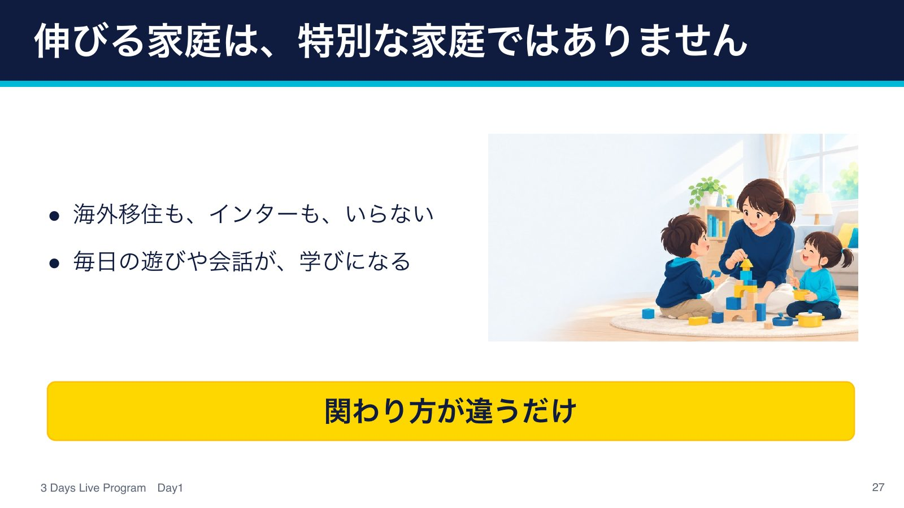
画面の文字：伸びる家庭は、特別な家庭ではありません／関わり方が違うだけ／海外移住も、インターも、いらない 毎日の遊びや会話が、学びになる
そして、伸びる家庭は、特別な家庭ではありません。
海外に移住しているわけでも、インターに通わせているわけでも、高収入なわけでもない。
私が見てきた、伸びる子のご家庭は、勉強をさせているわけでもありませんでした。
一緒に山に登ったり、キャンプをしたり、お料理を一緒に作ったり。毎日の遊びや会話が、そのまま学びになっていたんです。
違うのは、関わり方だけなんですね。
28枚目 では、お家で最高の教育環境を育てるには、何が大事？（約1分）
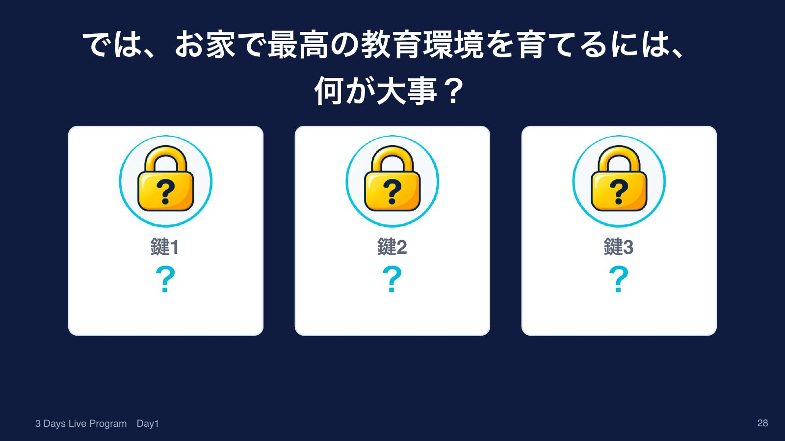
画面の文字：では、お家で最高の教育環境を育てるには、何が大事？／鍵1／？／鍵2／？／鍵3／？
では、お家で、最高の教育環境を育てるには、何が大事なのでしょうか？
ここで、最初にお見せした3つの鍵に戻ります。
今日は、このうち2つを開けていきますね。
7. 鍵1 考え方
29枚目 子どもの育ち方に、一番影響するものは何でしょう？（約0.5分）

画面の文字：鍵1 ？／子どもの育ち方に、一番影響するものは何でしょう？
1つ目の鍵です。
子どもの育ち方に、一番影響するものは何だと思いますか？
【間】
教材でしょうか。習い事でしょうか。チャットに書いてみてください。
30枚目 同じ声かけ、同じ知識。それでも、結果が違うご家庭がある（約2分）
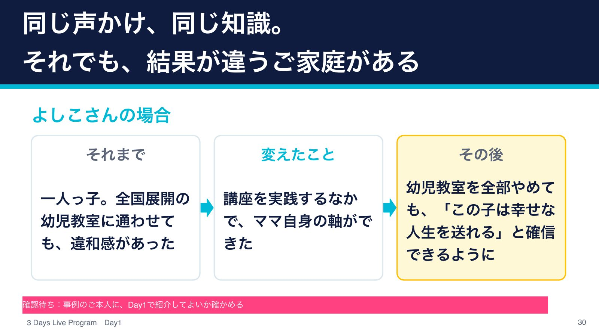
画面の文字：同じ声かけ、同じ知識。それでも、結果が違うご家庭がある／よしこさんの場合／それまで／一人っ子。全国展開の幼児教室に通わせても、違和感があった／変えたこと／講座を実践するなかで、ママ自身の軸ができた／その後／幼児教室を全部やめても、「この子は幸せな人生を送れる」と確信できるように
同じ声かけを学んで、同じ知識を持っていても、結果が違うご家庭があるんです。
たとえば、よしこさん。一人っ子のママです。
全国展開している幼児教室に通わせていたけれど、ずっと違和感があった。「この子が、自分の望む人生を歩める子になるには、どうしたらいいんだろう」と不安だったそうです。
よしこさんが変えたのは、教室でも教材でもありませんでした。講座を実践するなかで、ママ自身の考え方の軸ができていったんです。
最後には、幼児教室を全部やめても、「この子は幸せな人生を送れる」と確信できるようになりました。
同じことをしていても、ママの考え方が違うと、子どもに届くものが変わるんですね。
（確認待ち：事例のご本人に、Day1で紹介してよいか確かめる）
31枚目 違いは、ママの考え方（約2分）

画面の文字：違いは、ママの考え方／私たちはこれを「ママのOS」と呼んでいます／声かけや教材は「アプリ」 ママの考え方は、土台の「OS」 OSが古いと、アプリは動かない
その違いは、ママの考え方です。
私たちは、これを「ママのOS」と呼んでいます。
スマホで考えてみてください。声かけのテクニックや教材は、アプリです。
でも、土台のOSが古いままだと、どんなにいいアプリを入れても、うまく動かないですよね。
ママのOSがアップデートされると、同じ声かけでも、同じ教材でも、子どもへの届き方が変わるんです。
32枚目 世の中の教材や情報に足りないのは、ママ自身を変える視点（約1.5分）
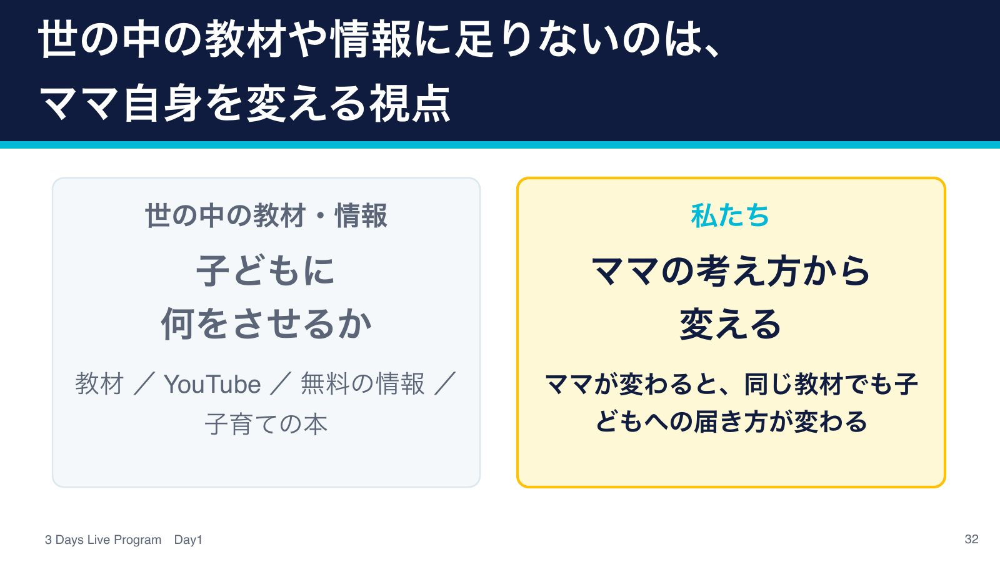
画面の文字：世の中の教材や情報に足りないのは、ママ自身を変える視点／世の中の教材・情報／子どもに何をさせるか／教材 ／ YouTube ／ 無料の情報 ／ 子育ての本／私たち／ママの考え方から変える／ママが変わると、同じ教材でも子どもへの届き方が変わる
世の中には、教材、YouTube、無料の情報、子育ての本、たくさんありますよね。
私も本を出していますし、YouTubeもやっています。
でも、そのほとんどに足りないものがあります。
それは、ママ自身を変える、という視点です。
子どもにこれをやらせましょう、この教材を使いましょう、この習い事に行かせましょう。全部、子どもだけを変えようとしているんですね。
私たちは、ママの考え方から始めます。ここが、他とのいちばんの違いです。
33枚目 管理するママではなく、太陽のようなママへ（約2分）

画面の文字：管理するママではなく、太陽のようなママへ／鍵1 考え方（ママのOS）が開きました／管理するママ → 子どもが止まる 太陽のママ → 子どもが伸びる
北風と太陽のお話、ご存じですよね。
ガミガミ言って、警察官のように見張って、管理するママ。そうなると、子どもは縮こまって、考えるのをやめてしまいます。
反対に、太陽のように、あたたかく見守るママ。子どもの興味の芽に気づいて、そっと照らしてあげる。すると、子どもは自分から伸びていくんです。
目指すのは、管理するママではなく、太陽のようなママです。
これが、1つ目の鍵。「考え方」です。
太陽のママになるための具体的なお話は、Day2でじっくりしていきますね。
8. 鍵2 やり方
34枚目 子どもには、いいものをどんどん足していけばいい？（約0.5分）
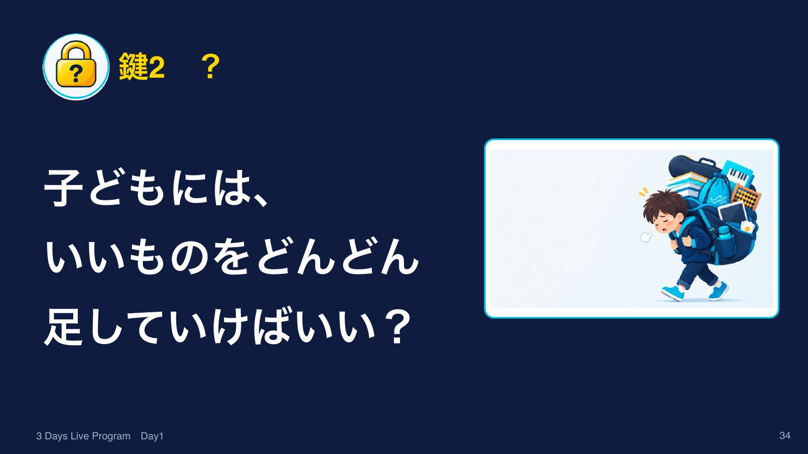
画面の文字：鍵2 ？／子どもには、いいものをどんどん足していけばいい？
2つ目の鍵です。
子どもには、いいと言われるものを、どんどん足していけばいいんでしょうか？
英語もやらせたい、ピアノも、水泳も、知育も。
気づいたら、子どもがたくさんの習い事を背負って、疲れている。そんなこと、ありませんか？
35枚目 一人ひとりに合わせた教育が、一番伸びる（約2分）

画面の文字：一人ひとりに合わせた教育が、一番伸びる／教育の言葉で「個別最適化」と言います／塾や一斉授業は、全員に同じことを教える仕組み その子に何が必要かを見て、合わせられるのは家庭 入試でも「自分でやる子」「その子だけの学びの積み重ね」が見られる時代に
答えは、足し算ではありません。
一人ひとりに合わせた教育が、一番伸びるんです。
教育の言葉で、「個別最適化」と言います。今、教育の世界で一番大事だと言われていることです。
でも、これは塾や一斉授業では、なかなかできません。全員に同じことを教える仕組みだからです。
コロナの頃、うちの子の学校がオンラインで家庭学習をサポートする形になったら、4分の1ほどの時間で授業が終わってしまったんです。その子に合わせると、それだけ早いんですね。
しかも今は、受験でも、自分でやる子かどうか、その子がどんなことに興味を持って、どう学んできたか、が見られる時代です。
プリント学習だけでは、この力は育ちません。
36枚目 私たちの立ち位置（約1.5分）
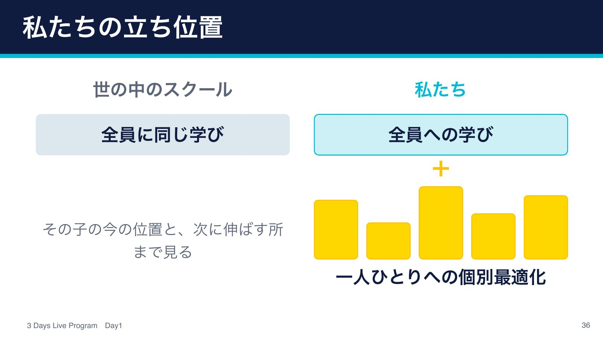
画面の文字：私たちの立ち位置／世の中のスクール／私たち／全員に同じ学び／全員への学び／＋／一人ひとりへの個別最適化／その子の今の位置と、次に伸ばす所まで見る
私たちの立ち位置を、図にするとこうなります。
世の中のスクールの多くは、全員に同じ学びを届けています。それ自体は大事なことです。
私たちは、全員に届ける学びに加えて、一人ひとりへの個別最適化をします。
その子が今どこにいて、次に何を伸ばせばいいのか。そこまで見て、お家での毎日の関わり方を変えていきます。
37枚目 では、どんな観点で合わせる？（約2分）

画面の文字：では、どんな観点で合わせる？／その答えが8つの卓越した力／探究心／思考力／運動能力／巧緻性／コミュニケーション力／自律・自己制御／コンピテンス／英語力
では、どんな観点で、その子に合わせればいいのでしょうか。
その答えが、8つの卓越した力です。
探究心、思考力、運動能力、巧緻性（手先の器用さ）、コミュニケーション力、自律・自己制御、コンピテンス（社会的なスキル）、そして英語力。
これは、子どもたちが大人になる2040年、2050年に、どんな大人になってほしいかから逆算して選んだ力です。OECDが示している教育の考え方も参考にしています。
大事なのは、8つがきれいな円になるように、バランスよく伸ばしていくことです。力どうしが支え合って、伸びていくんですね。
38枚目 見えない力を、見えるようにする「グローバルキッズ診断」（約1.5分）
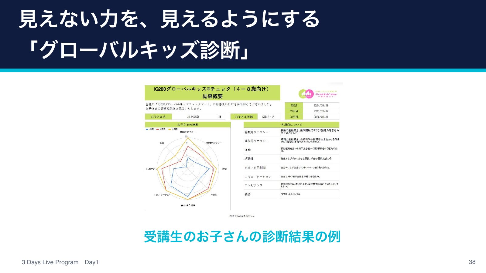
画面の文字：見えない力を、見えるようにする「グローバルキッズ診断」／受講生のお子さんの診断結果の例
でも、8つの力のうち、うちの子はどこが伸びていて、どこがこれからなのか、目では見えないですよね。
そこで私たちは、見えない力を見えるようにする「グローバルキッズ診断」を作りました。
これは、受講生さんのお子さんの診断結果です。最初は、たいていガタガタなんですよ。
勉強はさせていたけど運動はしていなかった、自分のことを自分でやる力はママが全部やってあげていた、そういうことが、グラフで見えてきます。
自分のお子さんの現在地、測ってみたくなりませんか？
39枚目 2つ目の鍵が開きました（約0.5分）

画面の文字：2つ目の鍵が開きました／鍵1／考え方／ママのOS／鍵2／やり方／個別最適化／鍵3／？
これで、2つ目の鍵が開きました。
1つ目の鍵は「考え方」。ママのOSです。
2つ目の鍵は「やり方」。その子に合わせる、個別最適化です。
9. 鍵3の予告
40枚目 考え方も、やり方も分かった。でも、一人だと3日後には元に戻ってしまう（約1分）
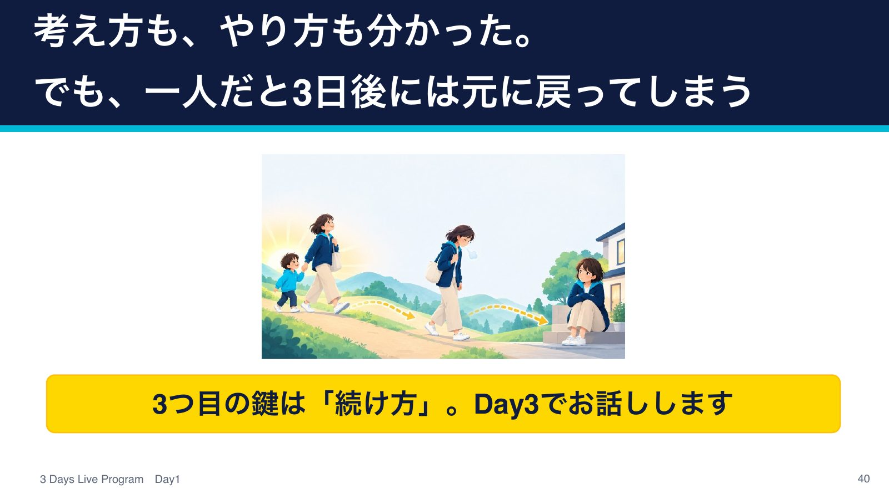
画面の文字：考え方も、やり方も分かった。でも、一人だと3日後には元に戻ってしまう／3つ目の鍵は「続け方」。Day3でお話しします
考え方も分かった。やり方も分かった。
でも、人は、学んでも、一人だと3日後には元に戻ってしまうんです。
今日のライブを見て、「よし、明日から変わろう」と思っても、毎日の忙しさの中で、いつのまにか元の自分に戻っている。
これは、皆さんの意志が弱いからではありません。誰でもそうなんです。
だから、3つ目の鍵があります。3つ目の鍵は「続け方」。
これは、Day3でお話しします。楽しみにしていてくださいね。
10. お客様の変化と締め
41枚目 実践したママたちの変化（約2分）
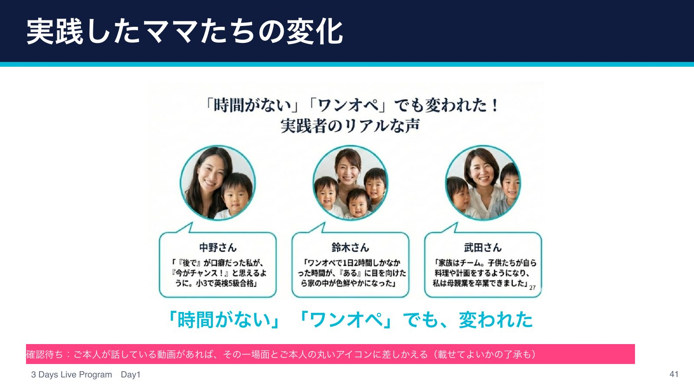
画面の文字：実践したママたちの変化／「時間がない」「ワンオペ」でも、変われた
実際に、このメソッドを実践したママたちの声をご紹介しますね。
「『後で』が口ぐせだった私が、『今がチャンス』と思えるようになった」という中野さん。
「ワンオペで1日2時間しかなかった時間が、『ある』に目を向けたら、家の中が色鮮やかになった」という鈴木さん。
「家族はチーム。子どもたちが自分から料理や計画をするようになって、私は母親業を卒業できました」という武田さん。
皆さん、最初は「時間がない」「ワンオペで、これ以上は無理」とおっしゃっていた方たちです。
（確認待ち：ご本人が話している動画があれば、その一場面とご本人の丸いアイコンに差しかえる（載せてよいかの了承も））
42枚目 世界最高峰の教育とは？（約1.5分）

画面の文字：世界最高峰の教育とは？／鍵1／考え方／ママのOS／×／鍵2／やり方／個別最適化／×／鍵3／？／考え方 × やり方 × ？
最初に、皆さんに質問しましたよね。
世界最高峰の教育とは、何でしょうか？
高い学費の学校でも、有名な塾でもありませんでした。
今日お話ししたのは、ママの考え方と、その子に合わせたやり方。考え方とやり方を、お家でかけ合わせることです。
そして、もう1つ。3つ目の鍵がかけ合わさったとき、お家が、世界最高峰の教育の場所になります。
43枚目 子どもに「させる」だけでなく、ママ自身もチャレンジする（約1分）
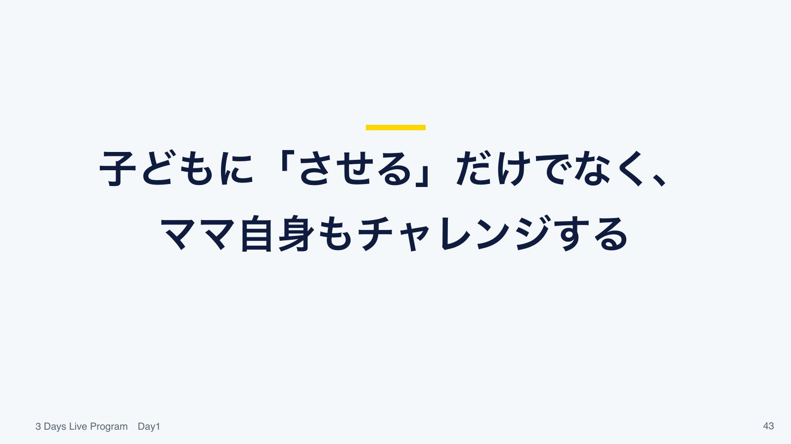
画面の文字：子どもに「させる」だけでなく、ママ自身もチャレンジする
子どもに、あれもさせたい、これもさせたい、ではなくて。
ママ自身が、チャレンジする。
ママが変わると、子どもが変わります。
私は、これこそが、教育のいちばん大事なところだと思っています。
11. ミッションと個別説明会
44枚目 2050年の世界（約2分）

画面の文字：2050年の世界／内閣府「ムーンショット目標」より
皆さんのお子さんが大人になって、働いたり、家族を持ったりする2050年。どんな世界になっていると思いますか？
内閣府が「ムーンショット目標」として、2050年の世界の姿を描いています。
ロボットやAIと一緒に働いたり、自分の分身のアバターで、いろいろな場所で活躍したり。今とは、まったく違う世界です。
【動画はライブでは流さず、あとでお送りする】
この世界を思い描くと、今のままの教育でいいのかな、と感じていただけると思います。
45枚目 私たちが目指していること（約1.5分）
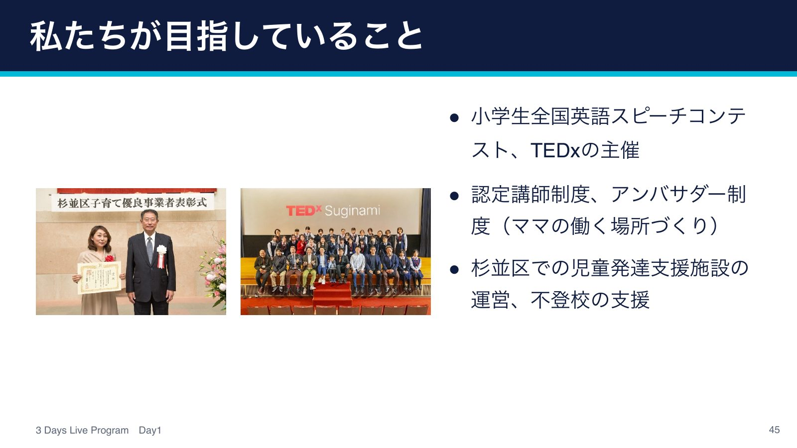
画面の文字：私たちが目指していること／小学生全国英語スピーチコンテスト、TEDxの主催 認定講師制度、アンバサダー制度（ママの働く場所づくり） 杉並区での児童発達支援施設の運営、不登校の支援
私たちグローバルキッズマムは、オンラインスクールだけをしている団体ではありません。
世界中の子どもたちが、いい教育を受けられるように。
小学生の全国英語スピーチコンテストや、TEDxの主催をしています。
子育てでキャリアが途切れてしまうママのために、認定講師制度やアンバサダー制度も作りました。
杉並区で児童発達支援施設を運営したり、不登校のお子さんの支援もしています。
46枚目 そのために、本当に変われるママを、一人でも多く増やしたい（約1分）

画面の文字：そのために、本当に変われるママを、一人でも多く増やしたい
2050年の世界で、子どもたちが自分で考えて、世界の人と手を取り合って生きていけるように。
そのために、私は、本当に変われるママを、一人でも多く増やしたいんです。
ママが変われば、子どもが変わります。子どもが変われば、未来が変わります。
だから、私たちには、たくさんの仲間が必要なんです。
47枚目 だから、グローバルキッズ講座があります（約2分）
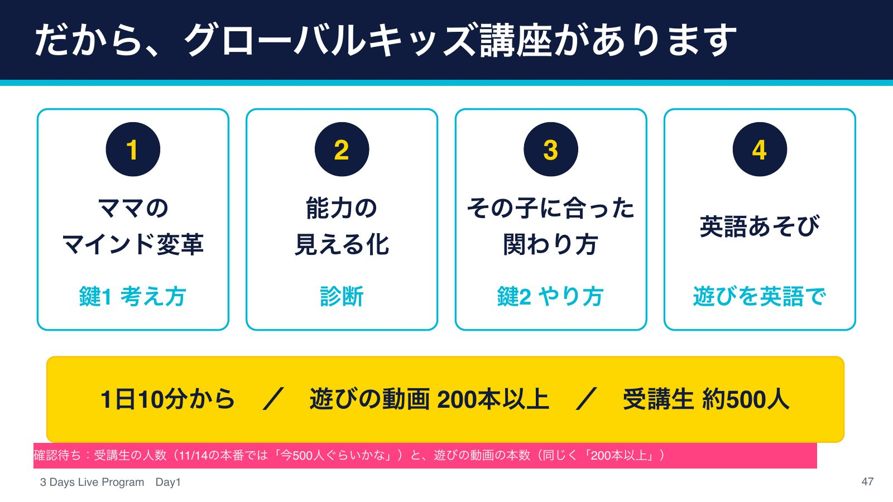
画面の文字：だから、グローバルキッズ講座があります／1／ママのマインド変革／鍵1 考え方／2／能力の見える化／診断／3／その子に合った関わり方／鍵2 やり方／4／英語あそび／遊びを英語で／1日10分から ／ 遊びの動画 200本以上 ／ 受講生 約500人
だから、グローバルキッズ講座があります。
柱は4つです。
1つ目は、ママのマインドを変えること。今日の、1つ目の鍵ですね。
2つ目は、能力の見える化。診断で、お子さんの今の位置と伸ばしどころが分かります。
3つ目は、その子に合った関わり方。2つ目の鍵です。
4つ目が、英語あそび。英語が苦手なママでも、いつもの遊びを英語でするだけです。
忙しいママが多いので、1日10分から始められるように、10分でできる遊びの動画を200本以上ご用意しています。
今、約500人の受講生さんが、学校のように学び合っています。
（確認待ち：受講生の人数（11/14の本番では「今500人ぐらいかな」）と、遊びの動画の本数（同じく「200本以上」））
48枚目 無料個別診断と、講座説明会（約1.5分）
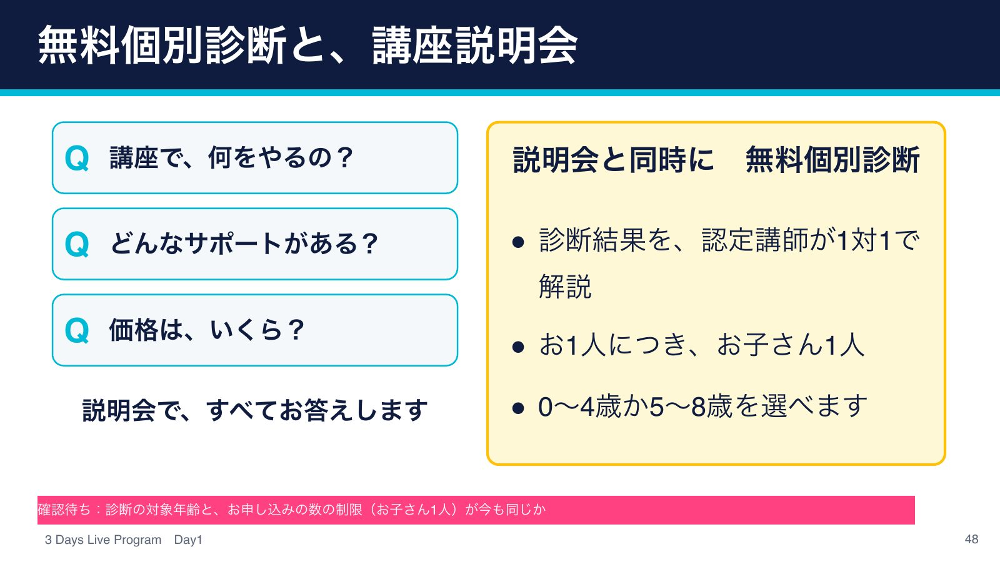
画面の文字：無料個別診断と、講座説明会／Q／講座で、何をやるの？／Q／どんなサポートがある？／Q／価格は、いくら？／説明会で、すべてお答えします／説明会と同時に 無料個別診断／診断結果を、認定講師が1対1で解説 お1人につき、お子さん1人 0〜4歳か5〜8歳を選べます
そこで、無料の個別診断と、講座の説明会をご用意しました。
講座で何をやるの？ どんなサポートがあるの？ 価格はいくら？ 気になることは、ここで全部お答えします。
そして、お子さんのグローバルキッズ診断の結果を、認定講師が1対1で解説します。
診断は手作業なので、お1人につきお子さん1人とさせていただいています。
まずは、お子さんの現在地を知るところから、始めてみてください。
（確認待ち：診断の対象年齢と、お申し込みの数の制限（お子さん1人）が今も同じか）
49枚目 2050年に向けて、私たちと一緒に、この船に乗りませんか？（約1分）
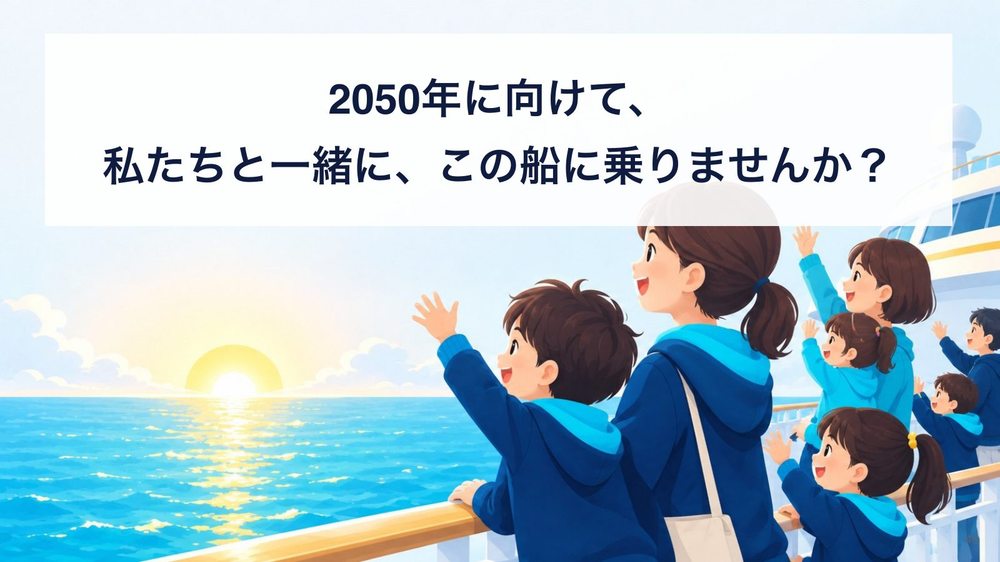
画面の文字：2050年に向けて、私たちと一緒に、この船に乗りませんか？
2050年に向けて、子どもたちの未来へ向かう船が、今、出ようとしています。
私たちと一緒に、この船に乗りませんか？
一人で頑張らなくて大丈夫です。仲間と一緒に、進んでいきましょう。
50枚目 お申し込みの流れ（約1.5分）

画面の文字：お申し込みの流れ／STEP 01／お申し込みフォームを送る／STEP 02／仮審査・日程の調整／STEP 03／当日、個別診断と説明会を受ける／チャットのリンク・QRコードから／https://sub.the-lead11.com/p/iq200-sem-v2／送ったあとに出てくる、事務局のLINEにもご登録ください
お申し込みの流れです。
まず、お申し込みフォームを送ってください。チャットにも、リンクとQRコードを貼っています。
フォームを送ると、事務局のLINEが出てきますので、そちらにもご登録ください。
次に、仮審査と日程の調整をします。
そして当日、個別診断と説明会を受けていただきます。
（確認待ち：申し込みページのURLが今の38クールのものか）
12. 課題と予告
51枚目 本日のまとめと課題（約0.5分）
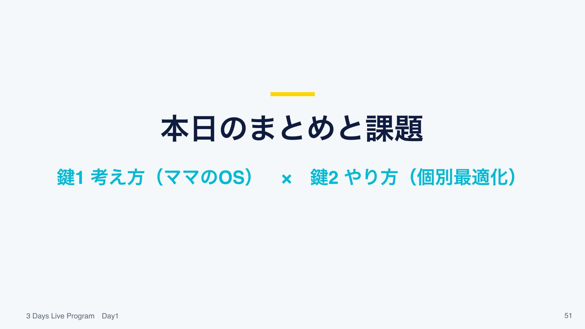
画面の文字：本日のまとめと課題／鍵1 考え方（ママのOS） × 鍵2 やり方（個別最適化）
では、今日のまとめと課題です。
今日は、5つの勘違いと、お家で最高の教育環境を育てる3つの鍵のうち、2つをお話ししました。
1つ目の鍵は「考え方」、ママのOS。2つ目の鍵は「やり方」、個別最適化でしたね。
52枚目 Day1の課題（約1.5分）

画面の文字：Day1の課題／ライブから48時間以内に、オープンチャットへ／今日の学び：Day1のライブで、どんな気づきがありましたか？ 自分の勘違い：5つの勘違いのうち、当てはまったものはありましたか？（正直に） 今のお悩み：お子さんの子育てで、いちばんの悩みは何ですか？
今日の課題は3つです。
1つ目。今日のライブで、どんな学びや気づきがありましたか？
2つ目。今日お話しした5つの勘違いのうち、自分がやってしまっていたものはありますか？ 正直に書いてください。
3つ目。今、お子さんの子育てで、いちばん悩んでいることは何ですか？
ライブから48時間以内に、オープンチャットに投稿してくださいね。
課題を出してくださった方には、10分ほどで見られる、楽しい動画をプレゼントします。
53枚目 Day2 太陽のママ（約0.5分）
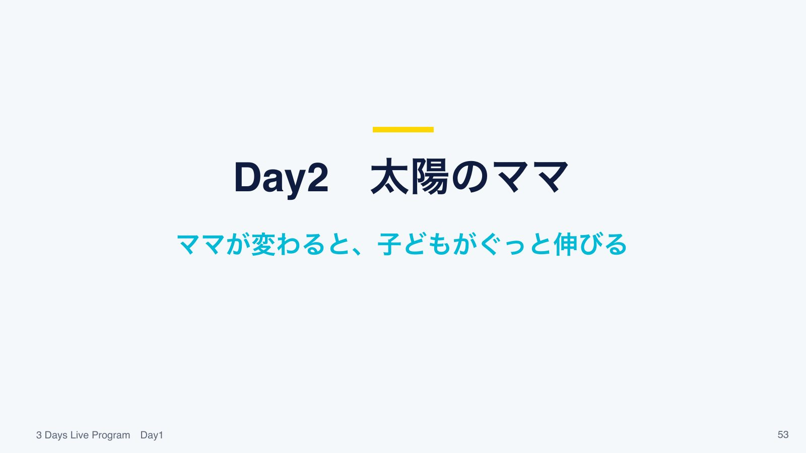
画面の文字：Day2 太陽のママ／ママが変わると、子どもがぐっと伸びる
明日のDay2では、今日開けた2つの鍵を、さらに深めていきます。
テーマは「太陽のママ」です。
ママがどう変わると、子どもがぐっと伸びていくのか。具体的にお話ししていきますね。
54枚目 3日間の全体像（約1分）

画面の文字：3日間の全体像／Day1 今日／鍵1・鍵2を開ける／5つの勘違い考え方（ママのOS）やり方（個別最適化）／Day2／鍵1・鍵2を深める／太陽のママママが変わると、子どもがぐっと伸びる／Day3／鍵3を開ける／続け方お家での具体的な遊びと関わり方
3日間の全体像です。
Day1の今日は、2つの鍵を開けました。
Day2では、その2つの鍵を深めていきます。
そしてDay3で、3つ目の鍵を開けて、お家で何をするのか、具体的な遊びや関わり方をお話しします。
お休みの日の夜に、こうして学びに来てくださる皆さん。お子さんたちは、本当にラッキーだと思います。
3日間、一緒に学んでいきましょう。今日はありがとうございました。おやすみなさい。